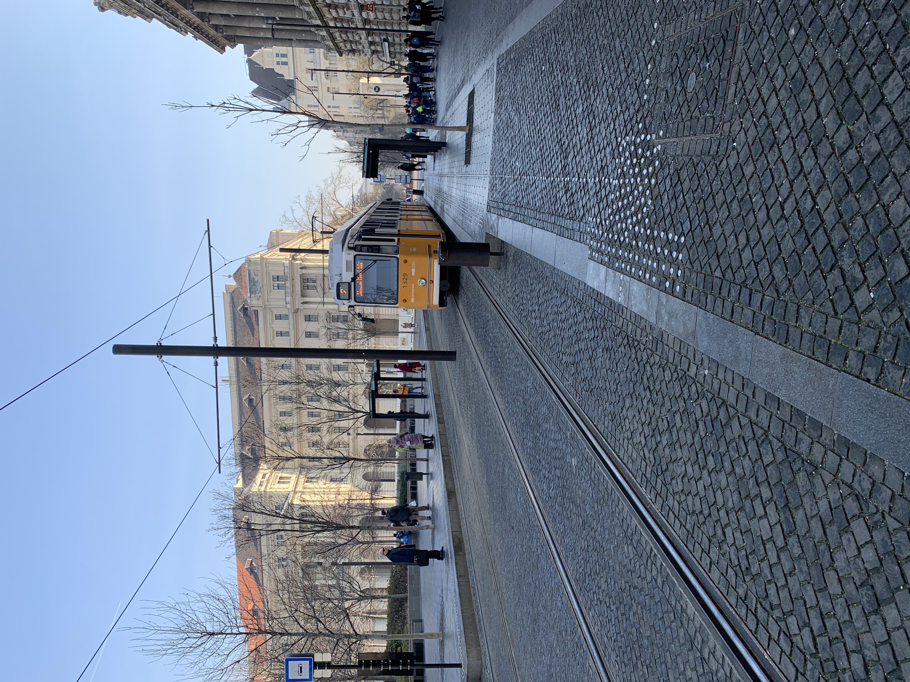

Sötét taxikban és tömött négyes-hatoson,
Az első metrón és éjszakai buszokon,
Házibulikba menet vagy házibulikból haza,
Mindenki olyan szép, mindenki oly laza
Carson Coma - Polaroid
Környezettudatos, gyors, büdös - ezzel a három szóval lehet a legjobban jellemezni a budapesti közlekedést. Hétköznapjaim során, mint a legtöbb városi lakosnak, elengedhetetlen, hogy egyik villamosról a másikra pattanjak ügyintézéseim alkalmával. Elsőre talán kiismerhetetlennek tűnhet a járművek kusza menetrendje, de kellő tapasztalattal az egész város bejárhatóvá és könnyen megismerhetővé válik.
Budapest GO vagy Google Maps
Elinduláskor fontos előre ellenőrizni, merre is visz utunk a nap során. A legtöbb ember egy utazástervező alkalmazással nézi meg a napi útvonalát, ezek közül is kettő fontosabb is van: a Google Maps és Budapest GO.
Google Maps
Tapasztalataim szerint a legtöbb esetben a legoptimálisabb útvonalat kínálja. Be lehet állítani Munkahelyet, Lakást és egyéb mentett helyeket, így könnyebb az útvonaltervezés folyamata. Meg lehet osztani másokkal a tartózkodási helyünk. Átjárást biztosít Androidos és iOS-es készülékek között, valamint számítógépen is lehet használni. Az egyetlen negatívum amit az appal szemben találtam, hogy a járatok menetrendjei nem ellenőrizhetőek egyszerűen.
Budapest GO
Járatok, megállók elmenthetőek, gyorsan visszakereshetőek, így könnyítve az elindulást vagy az átszállást. Eddig sajnos nekem a Google Maps jobb útvonalterveket ajánlott, így az appot csak kiegészítésképp használom. Nagy pozitívum még viszont, hogy a Go-ban elektronikus jegyünket vagy bérletünket is el tudjuk menteni. A Budapest GO szintén elérhető a Play Áruházból vagy az App Store-ból.
Villamos
A villamos szinte helyi különlegesség - eltekintve pár más nagyobb magyar várostól. Még Budapesten belül is vannak kerületek, ahol nem jár a sárga hernyó - épp ezért olyan különleges számomra napi szinten felszállni a 4-es 6-osra. Tagadhatatlan, hogy a villamosok szerves részei a budapesti közlekedésnek, mind a fontosabb pontokat összeköti hálózatuk, valamint az autók között beálló dugó sincs rájuk hatással. Egyetlen kifogásolnivaló tulajdonságuk - a problémás utasokon kívül - a gyakori technikai hibák, így szinte rutinommá vált a Corvin-tér Lágymányos közötti séta

2-es villamos
Ha valaki Budapest legfontosabb részeit szeretné megnézni csupán fél óra alatt, a 2-es útvonala a tökéletes választás. A villamos a Duna mentén halad végig minden nevezetes helyet érintve egészen a Jászai Mari tértől a Hungária körút déli részén lévő Közvágóhíd megálló között. A járatról megcsodálható északról délre haladva a Kossuth Lajos tér és a Parlament, a budai oldalon a Vár és a Gellért-hegy, a Lánchíd, a Szabadsághíd valamint még egyetemünk épülete is. A 2-es fontos része egy könnyed városnéző túrának, de új élmény lehet azoknak is, akik még nem utaztak föld alatt villamossal.
4-es 6-os villamos
A 4-es 6-os rettentő ikonikussá vált, még verset is írtak róla. Alig találkozom olyannal, aki ne hallott volna a nagykörúton közlekedő járatról. A 2-essel hasonlóképp ez a 2 villamos is összeköti a belváros minden szegletét, a Széll Kálmán térről indulvaÚjbuda központig és a Móricz Zsigmond körtérig. A 4-es 6-os utasai nagyon széles palettán mozognak: némelyikük, ha nem lenne, ki kéne találni. Meséltek már patkányos fószerről, hintaágyban utazókról, harmónikás kéregetőkről, a járaton mindig történik valami bolondság. 0-24-es közlekedésének köszönhetően egy-egy merészebb éjszaka után is elkíséri a fiatalokat, vagy reggel a korán munkába igyekvőket.
Az óvodából hazafelé a Margit hídon mindig megálltunk úgy középtájt. Ott bújik át a metró a Duna alatt, és az ablakon látni lehet a halakat - magyaráztam Gazsinak. Láttam, hogy elgondolkozik, elcsendesedik. Vasárnap eljött a nagy nap, a Batthyányn beültünk az első kocsiba. Szótlanul, tágra nyílt szemmel ült a Kossuth térig. - Na, láttad a halakat? - kérdeztem mosolyogva már a mozgólépcsőn. - Igen, a legszebbek a piros színűek voltak - válaszolta komolyan.
100 szóban Budapest 2020, írta Zsigó György
1-es metró
“A Kisföldalatti szinte minden bemutatásánál elhangzik, hogy ez az európai kontinens első, a világ második metróvonala, és az 1896-os millenniumi ünnepségekre készült el.” - írja a We Love Budapest oldala, így egyértelműen én sem kezdhettem mással a cikket. Korát megállói a mai napig őrzik - a legtöbbjük falára a csempén kívül még faberakás is került, és még mindig állnak a régi jegyeladó bódék. A többi budapesti metróval ellentétben az 1-es megállóiban nincsen mozgólépcső, és a kocsik is eléggé elavultak - de ez teszi szerethetővé. A leghangosabb járat a Vörösmarty teret köti össze a zuglói Mexikói úttal, olyan fontos helyeket érintve, mint például a Városliget vagy a Hősök tere. Mindig is szerettem a Kisföldalatti egyszerűségét, remélem még sokáig marad időkapszula Budapest belsejében.
2-es metró
Aki sokat utazott a 2-es metróval tudja, milyen egyszerű de nagyszerű ez a vonal. A megállói letisztultak, nem túl régiek, a kocsija szokványos állapotban van, a pályája pedig a legfontosabb tereket és látványosságokat köti össze. Van felszín feletti és alatti része is, hosszú (néha órákig tartó - na jó nem :)) ) megállója - igen itt a Puskás - Keletire gondoltam, összességében az egyik legfontosabb budapesti szerelvény. Éjjelente hamar össze lehet barátkozni idegenekkel például egy papírrepülő csata keretein belül, amiket a minden reggel osztogatott ingyenes újság maradványai tesznek lehetővé. Van, amikor a gyorsaság nem előny - közlekedés szempontjából viszont az, és a 2-es tökéletesen be is tartja ezt: közel 20 percen belül áthalad az egész városon, beleértve a Dunát is. Gondolom látszik, hogy külkerületiként ezzel közlekedek a legtöbbet - ezzel is igazolva, mennyit segít az ingázóknak és agglomerációban élőknek a kedves 2-es.
3-as metró
Március 21.-én felavattam a 3-as metrót. A sok felújításnak hála mára már a köztudatban egy folyamatosan lezárt és terelt vonalként él a kék metró, és az, hogy újra teljes vonalon közlekedik, mintha egy teljesen új járatot adott volna a városnak. Véleményem szerint az új megállók nem lettek modernebbek, csak letisztultabbak, a régi kocsikat is megtartották, amiken fun fact: van nem használt leszállásjelző is. A 3-as közlekedési szempontból irtó fontos, nem is értem, hogy bírták az emberek a folyamatos lezárásokat. Újpest Városközpontot köti össze Kőbánya-Kispesttel, ez teszi a leghosszabb budapesti metróvonallá. A kocsikon mindig erős fehér fény ég, ezzel egy sokkal városiasabb hatást keltve, mint a 2-es sárgás fénye. A felújításoknak hála a 3-assal már bárki közlekedhet - az új megállók akadálymentesek, és “színesebb” gyerekbarátabbak lettek.
Cikk: 3-as metró átadása
4-es metró
A 4-es metró a legfiatalabb vonal - annak ellenére, hogy már 1970-ben tervben volt, csak 2014-re született meg. Kocsijai ugyan olyanok, mint a 2-esnek, megállói viszont annál nagyobb figyelmet kaptak az átadást követően. Szinte mindenki a Szent Gellért térre vagy a Bikás parkba járt fotózkodni, a várók belmagassága is sokkal nagyobb az előzőekhez képest. 2014-ben könnyen elérhetővé vált Kelenföld is, valamint Újbuda fontosabb csomópontjai, a Keleti aluljáró pedig még nagyobb lett, mint volt. A 4-es fiatalságának ellenére mára már jól beépült a budapesti közlekedésbe, segítve a budaiakat és a vonatozókat egyaránt.
BKV hajó
Nem sokan hallottak róla, pedig budapest bérletünkkel még hajóra is szállhatunk a Duna mentén. Az alábbi 2022-es videó jól összefoglalja, mit kell tudni a BKV hajózásról: